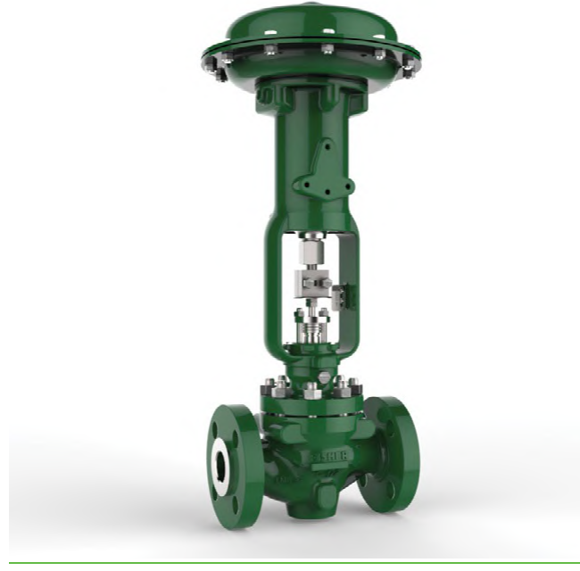
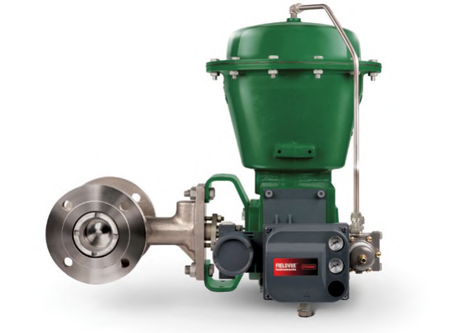

Sliding-Stem vs. Rotary — Same Job, Different Motion
Sliding-Stem

Linear stem motion through the body's ports (globe body shown)
Rotary

A turning shaft swings the closure member across the flow path (butterfly-style body shown)
After Control Valve Handbook, 6th ed., Figs. 1.2, 1.13 — used directly. Component Index: cvh-cmp-sliding-stem-valve-photo, cvh-cmp-rotary-valve-photo.